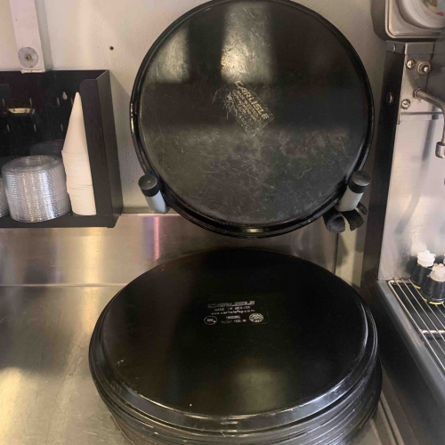
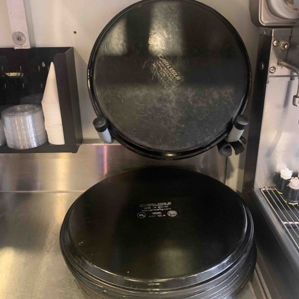

Trays

Large Trays
Large trays can be found above the expo stations. Make sure the expo worker has a few trays to work with
while you clean but don't forget to clean these too!
Be sure to clean the top and bottom of each tray. They should not be soaking wet when you put them away!
After cleaning you can place them above the expo stations like so:
Be sure to clean the top and bottom of each tray. They should not be soaking wet when you put them away!
After cleaning you can place them above the expo stations like so:
Small Trays
Small trays can be found next to each sodastation. This side-work includes the slightly larger beverage trays by soda station 1.
Be sure to clean the top and bottom of each tray. They should not be soaking wet when you put them away!
After cleaning you can place them on the soda station racks like so:

Be sure to clean the top and bottom of each tray. They should not be soaking wet when you put them away!
After cleaning you can place them on the soda station racks like so:
